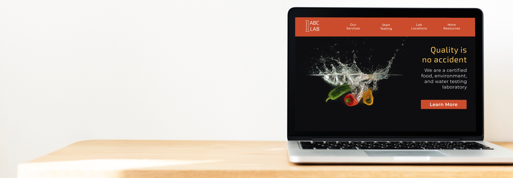
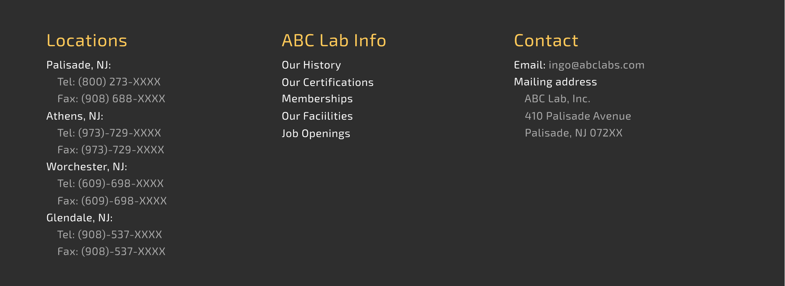
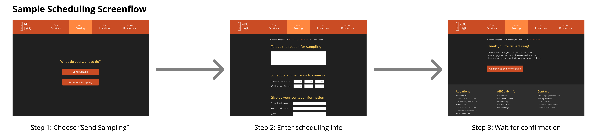

ABC Lab: Usability Through Design
Background
At one point I had to submit a sample to an analytical lab. The secretary hoped to find information on how to fill out the sample submission form from the lab's website. Upon loading the site, she exclaimed, "This site isn't user friendly!"
The site had no CSS, and links of interest were at the bottom of the page. It was not clear how to submit a test sample. The website was in need of reorganization.
The goals of this redesign are to:
- Improve the aesthetics.
- Reorganize the information structure.
- Provide a straightforward way to submit a sample.
Improving the aesthetics
The original website was written entirely in HTML, with no CSS to guide the presentation of the site. Furthermore, there were barely any images decorating the site, aside from some clip art. By focusing on the presentation, the website could experience increased traffic. Indeed, images have been shown to increase user engagement dramatically.
The color scheme was created to complement the splash image on the home page. I chose that particular splash image to reflect the laboratory's focus on food and water testing.

Reorganizing the information structure
Links for lab locations, lab services, and sample submissions were located on the bottom of the page. I brought those links to the navigation bar on the top of the page, whereas I relegated the rest of the informaton into the footer.

Providing a straightforward sample submission process
The secretary struggled to find the link to submit sample information--in the end, she called the lab, who then emailed her the sample submission form. Based on her struggle, I designed an online "submission" form where the customer enters information to generate a PDF of the submission form, which can then be emailed to the lab. I also designed the screenflow for scheduling of sample collection, a service tha my company uses for water testing.

Conclusion
Through design, I reorganized the information structure of the original web page to improve usability and to create a more professional presentation. You can view a clickable prototype of the website here. Perhaps with this new design, the secretary would silently prepare the sample submission form through the website instead of quipping on the lack of usability.